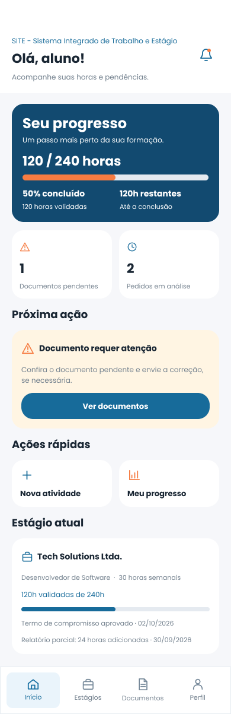
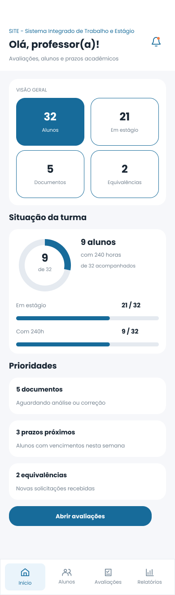
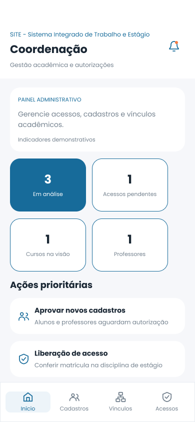

Documentos organizados
Envio, consulta e acompanhamento da documentação em cada etapa.
Sistema Integrado de Trabalho e Estágio
Tudo o que você precisa para acompanhar estágios, equivalências, documentos e atividades acadêmicas em um só lugar.



Gerenciar estágios envolve documentos, aprovações, carga horária e comunicação entre diferentes responsáveis. O SITE reúne esse processo em um ambiente digital, com informações acessíveis e etapas mais organizadas.
Envio, consulta e acompanhamento da documentação em cada etapa.
Visualize horas registradas, validadas e solicitações em análise.
Mais visibilidade sobre solicitações, correções e decisões acadêmicas.
Veja como o SITE acompanha cada etapa da jornada acadêmica.
Uma experiência simples para quem estagia, para quem avalia e para quem organiza os processos acadêmicos.
Cadastre e acompanhe estágios e outras atividades acadêmicas.
Envie documentos, acompanhe análises e realize correções solicitadas.
Acompanhe a carga horária exigida, validada e ainda pendente.
Receba atualizações sobre documentos, solicitações e prazos importantes.
Experiências pensadas para as responsabilidades de cada perfil.
Registre estágios e equivalências, envie documentos e acompanhe horas, pendências e solicitações.
Consulte alunos vinculados, analise documentos e acompanhe o andamento das avaliações acadêmicas.
Organize cadastros e vínculos acadêmicos, acompanhe solicitações e gerencie permissões de acesso.
Do primeiro registro à conclusão do estágio, o SITE ajuda a visualizar o que já foi feito e o que ainda precisa de atenção.
Registre um estágio, equivalência ou outra atividade acadêmica.
Reúna os termos e comprovantes necessários.
Consulte pendências, avaliações e carga horária.
Finalize as etapas e acompanhe o encerramento.
Explore as telas reais do protótipo SITE dentro de mockups de iPhone.
Visualize seu progresso, monitore documentos e descubra suas próximas ações em uma interface organizada.
Conheça a proposta do SITE e descubra como o projeto conecta pessoas, documentos e etapas da jornada de estágio.